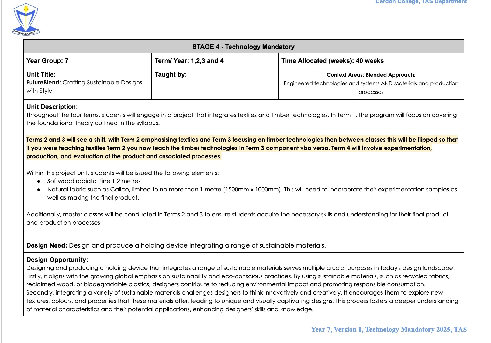
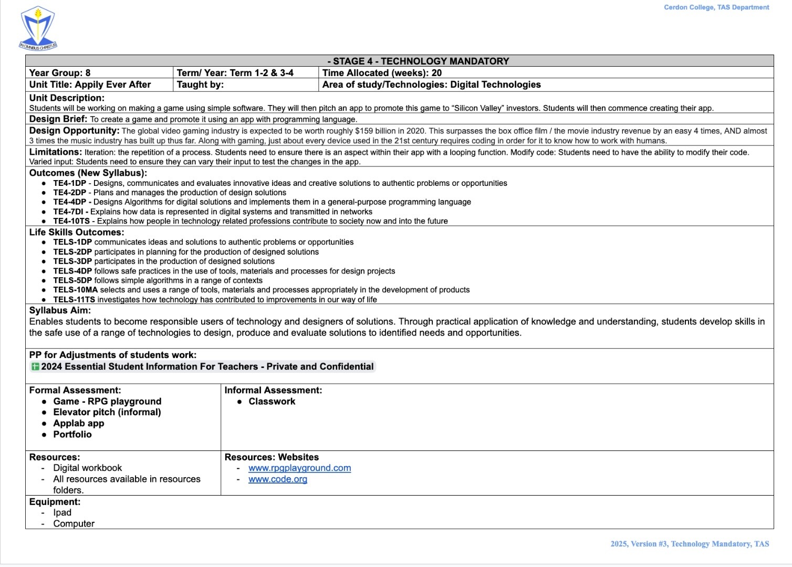
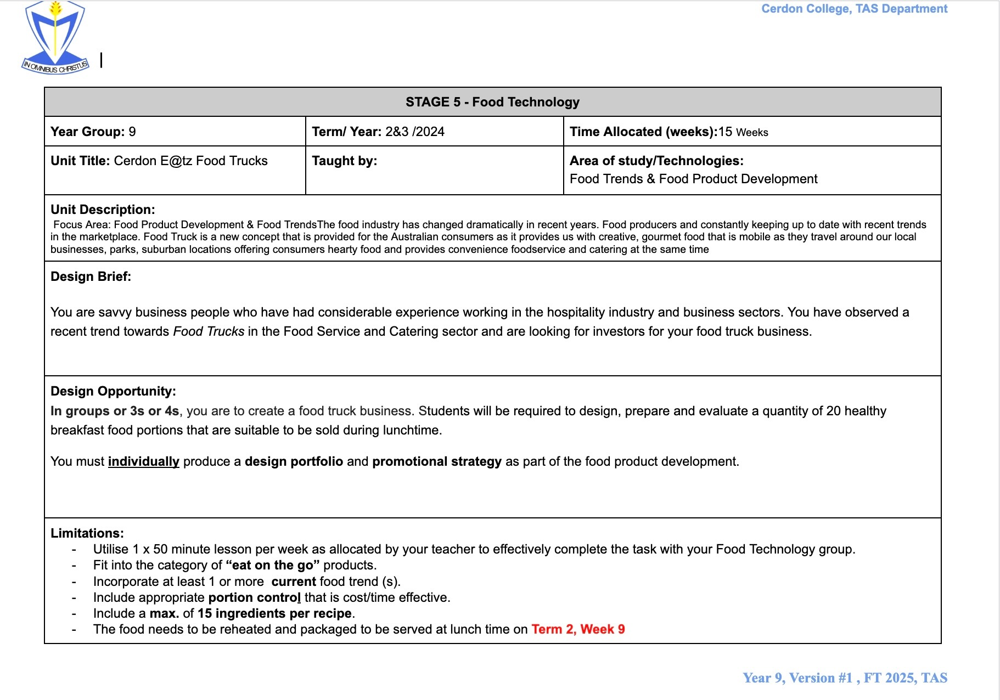
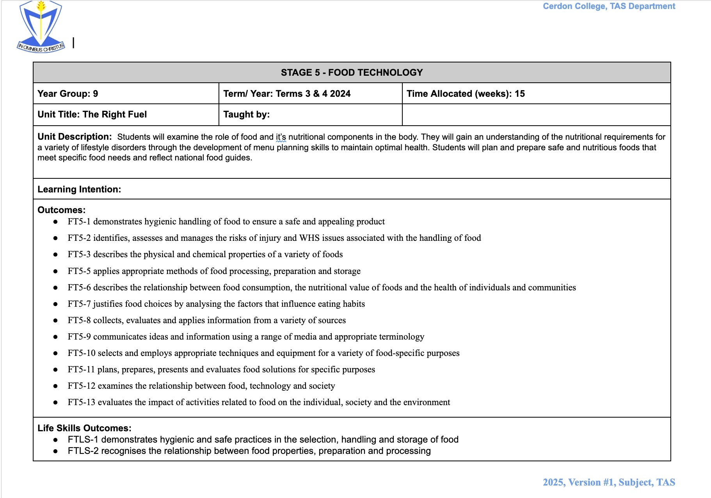
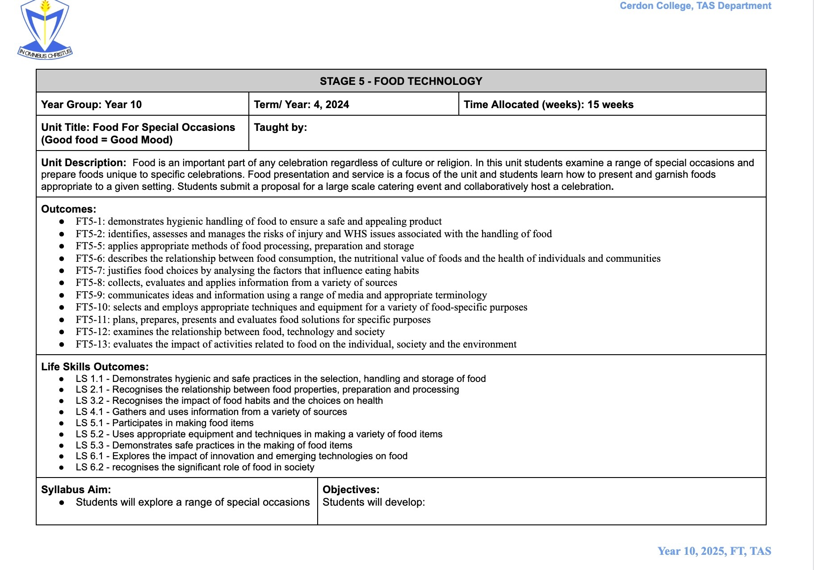
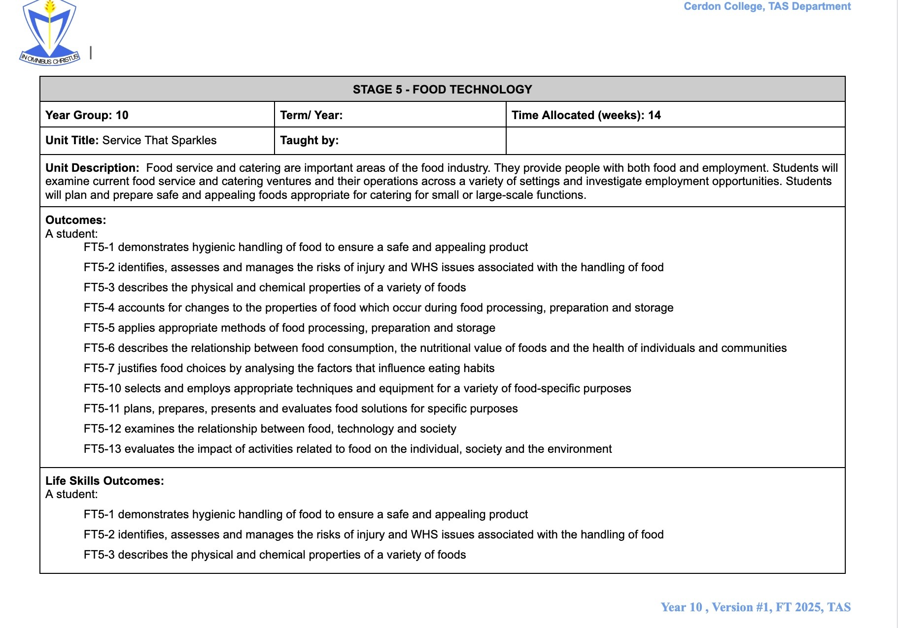
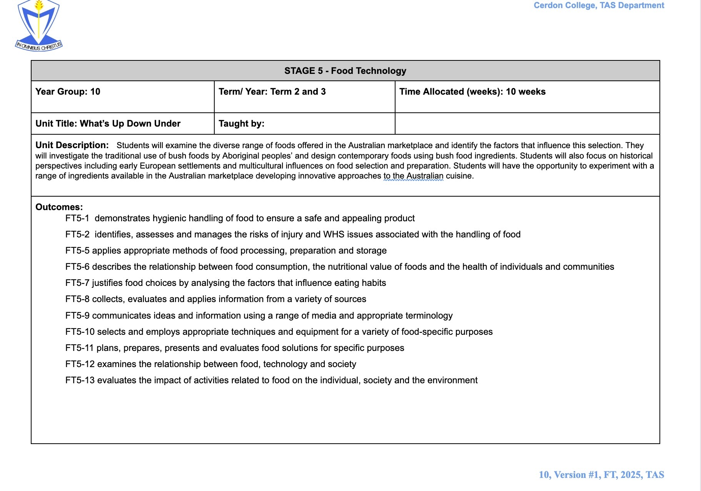
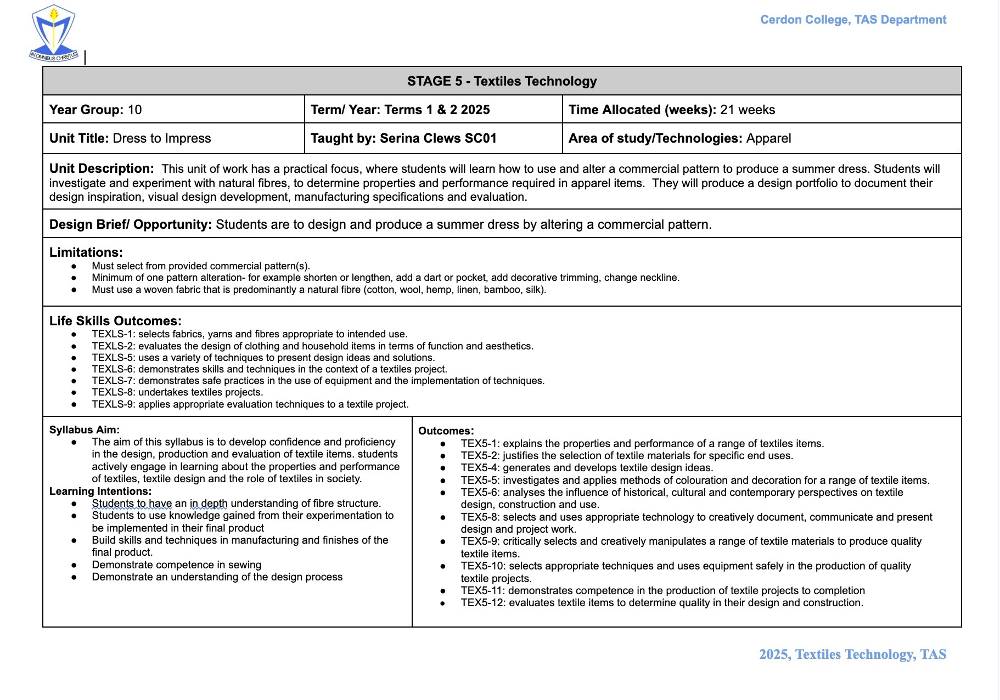
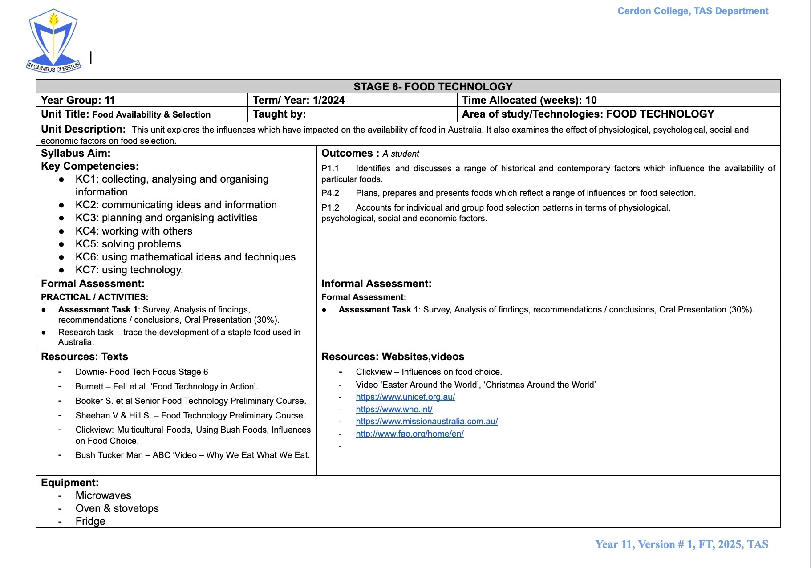
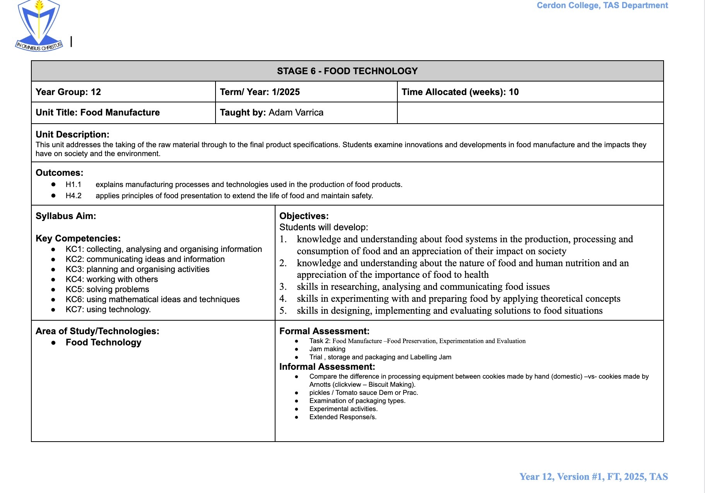

Home
About
Work Samples
Units of Work
Teaching Philosophy
Contact
Units of Work
A Sequence of Units of Work for TAS.
Industrial Technology – Year 7 & 8
▾
Year 7 & 8

View Year 7 Program
These units showcase programs suitable for technology mandatory for years 7 and 8. These programs allow students to explore most areas of TAS, providing them insight to select one of the TAS subjects through HSC.

View Year 8 Program
Food Technology – Year 9 & 10
▾
Year 9 & 10

View the year 9 program.

View the year 9 program.

View the year 10 program.

View the year 10 program.

View the year 10 program.
Textiles & Design - Year 10
▾
Year 10
This program showcases a unit of work for Year 10 textiles technology.

View the year 10 program.
Food Technology – Year 11 & 12
▾
Year 11 & 12

View Year 11 Program
These are examples of 1 unit from each year (11 & 12).

View Year 12 Program